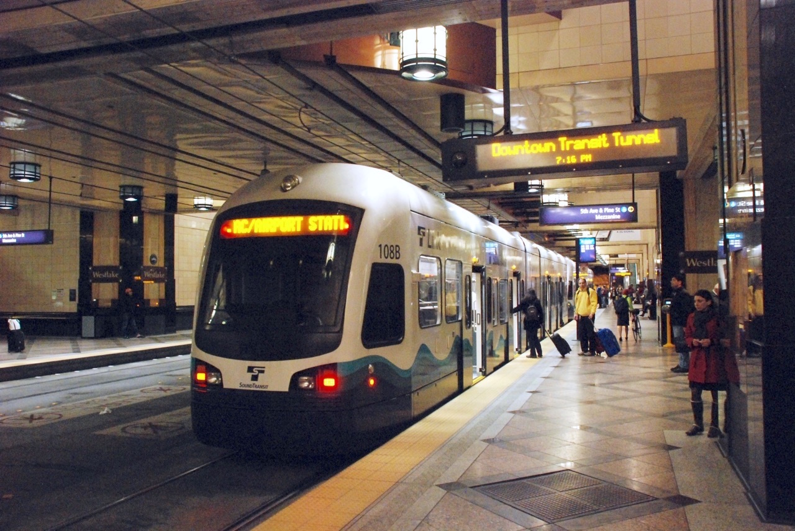

Social and infrastructure factors shaping road safety
A multi-level analysis of crash and infrastructure disparities in Ohio, Texas and Washington.
Report published October 2025
 TALISTransportation Analytics, Learning
TALISTransportation Analytics, LearningDr. Angela Kitali’s research group
How travel constraints, network design and service policy shape access to opportunities and the distribution of transportation benefits.
Accessibility concerns the activities and services people can reach under the conditions of a complete journey. Our research examines rural walking and cycling barriers, bicycle–transit connections and differences in access to emergency care. A complementary Tacoma study uses Bayesian quantile regression to examine shared e-bike and e-scooter use at different trip-rate levels. Its census-block-group analysis asks whether neighborhood associations in high-use areas also describe places with lower use. Together, these settings connect service availability with travel needs and the distribution of actual use.
A 2026 study estimates emergency-medical-service accessibility for elderly drivers involved in rural Ohio crashes. It combines 2017–2022 crash data, facility locations and socioeconomic information through an Enhanced Two-Step Floating Catchment Area method. Network travel times define catchments at census-block-group level. The analysis identifies geographic differences in potential access; measured accessibility is distinct from the response time of a particular ambulance call.

Geospatial and network analysis, neighborhood and demographic data, bicycle–transit routing, and the interpretation of community needs alongside measured conditions.
A multi-level analysis of crash and infrastructure disparities in Ohio, Texas and Washington.
Report published October 2025
Identifying and addressing active-transportation disparities in underserved rural residential clusters.
Ongoing; scheduled completion February 2027
Detecting and mapping walking and bicycle facilities to support rural-network analysis.
Research in progress
Read the passenger-ferry planning study
@article{10117703611981261468747,
title = {Are Elderly Crash Victims in Rural Areas Receiving Timely Emergency Medical Services Access?},
author = {Philip F. Balyagati and Tumaini A. Sakaza and Emmanuel Kidando and Josiah Owusu-Danquah and Angela Kitali},
journal = {Transportation Research Record: Journal of the Transportation Research Board},
year = {2026},
doi = {10.1177/03611981261468747}
}@article{101016jjth2026102371,
title = {Influence of the factors associated with micromobility crashes on the injury sustained},
author = {Abdul Ngereza and Panick Kalambay and Angela Kitali and Emmanuel Kidando and Jeffrey Walters and Heather Dillon},
journal = {Journal of Transport & Health},
year = {2026},
volume = {50},
pages = {102371},
doi = {10.1016/j.jth.2026.102371}
}@article{101016jjsr202604009,
title = {Hierarchical Bayesian analysis of prehospital timelines for elderly adults in rural and urban motor-vehicle crashes},
author = {Philip F. Balyagati and Abdul S. Ngereza and Emmanuel Kidando and Josiah Owusu-Danquah and Angela Kitali and Panick Kalambay},
journal = {Journal of Safety Research},
year = {2026},
volume = {97},
pages = {453-462},
doi = {10.1016/j.jsr.2026.04.009}
}@article{101016jcities2026107065,
title = {A Bayesian quantile-based analysis of micromobility usage and challenges},
author = {Panick Kalambay and Matthew Ford and Angela Kitali and Abdul Ngereza and Emmanuel Kidando and Jeffrey P. Walters and Heather Dillon},
journal = {Cities},
year = {2026},
volume = {174},
pages = {107065},
doi = {10.1016/j.cities.2026.107065}
}